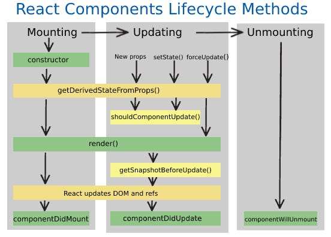

HISTORY OF REACT JS
Reactjs
React (also known as React.js or ReactJS) is a free and open-source front-end JavaScript library
for building user interfaces based on components. It is maintained by Meta (formerly Facebook) and a
community of individual developers and companies.
React can be used to develop single-page, mobile, or server-rendered applications with frameworks like
Next.js. Because React is only concerned with the user interface and rendering components to the DOM,
React applications often rely on libraries for routing and other client-side functionality.
A
key
advantage of React is that it only rerenders those parts of the page that have changed, avoiding
unnecessary rerendering of unchanged DOM elements.
What is React??
React is a is a free and open-source front-end JavaScript library created by Facebook in 2013.
React is used to build single-page applications. React is a tool for building UI components.
How does React Work?
You know the browser create DOM directly, React creates a virtual DOM in memory, where it does all the necessary manipulating, before making the changes in the browser DOM.
React only changes what needs to be changed!
React finds out what changes have been made, and changes only what needs to be changed.
Differences between Real Dom and Virtual Dom
Setup
Download Nodejs.
Set environment
node -v
npm -v
Open cmd and run following commond:- npm install -g create-react-app
Create a react app by following command :- npx create-react-app my-app
cd my-app
npm start

Explain folder structure.
ECMAScript 6 (ES6)
ECMAScript was created to standardize JavaScript, and ES6 is the 6th version of ECMAScript, it was
published in 2015, and is also known as ECMAScript 2015.
Why Should we Learn ES6?
React uses ES6, and you should be familiar with some of the new features like:
(1) Classes
(2) Arrow Functions
(3) Variables (let, const, var)
(4) Array Methods like .map()
(5) Destructuring
(6) Modules
(7) Ternary Operator
(8) Spread Operator
Classes
A class is a type of function, but instead of using the keyword function to initiate it, we use the keyword class, and the properties are assigned inside a constructor() method.
(1) How can i create a class??
(2) How can i create a objects using the class??
(3) How can i create a method in the class??
constructor(name) {
this.name = name;
}
work() {
console.log("Nice work at all");
}
}
const employee1 = new Employee("Ajay");
document.write(employee1.name);
employee1.work();
Class Inheritance
• To create a class inheritance, use the extends keyword.
• The super() method refers to the parent class.
• A class created with a class inheritance inherits all the methods from another class:
constructor(name) {
this.shapName = name;
}
area() {
console.log('I have a ' + this.shapName);
}
}
class Circle extends Shap {
constructor(name, r) {
super(name);
this.radius = r;
}
show() {
super.area();
console.log("Area of "+ this.shapName+', is a '+ (this.radius*this.radius*3.14))
}
}
const myShap = new Circle("Circle-1", 10);
myShap.show();
Arrow Functions
function with function keyword.
function FuncName(){
console.log("Abc")
}
function with Arrow function.
const FuncName = () => {
console.log("Abc")
}
Arrow function with parameter.
const FuncName = (name) => {
console.log("Abc",name)
}
function with Arrow function more shorter.
const FuncName = name => console.log("Abc")
JavaScript Modules
This makes it easier to maintain the code.
ECMAScript Modules rely on the import and export statements.
person.js
export const name = "Jayesh"
export const age = 30;
// export {name, age}
infomation.js
import {name, age} from "./person.js"
console.log(name, age);
const info = () => {
console.log(name + ' is ' + age + 'years old.';)
};
export default info;
personInfo.js
import info from "./ infomation.js"
Info()
What is JSX?
JSX stands for JavaScript XML. JSX makes it easier to write and add HTML in React. JSX allows us to write HTML elements in JavaScript and place them in the DOM without any createElement() and/or appendChild() methods. JSX converts HTML tags into react elements.
import ReactDOM from 'react-dom/client';
const ele = <h1>This is jsx syntax in react. Run js code in react with the help of curly brace.
like :- { 1 + 2 - 3 * 4 } </h1>;
const root = ReactDOM.createRoot(document.getElementById('demo'));
root.render(ele);
- Elements Must be Closed like image tag
- Attribute class = className
- React supports if statements, but not inside JSX.
- Use ternary expressions inside jsx with help of {(condition) ? "True":"False"}
Example:- const myElement = <h1>{(x) < 10 ? "True condition" : "False condition"}</h1>
What is components in react??
Components are independent and reusable bits of code. They serve the same purpose as JavaScript
functions, but work in isolation and return HTML. Components come in two types,
(1) Class component
(2) Function component.
Class component :-
React Class components have a built-in state object. You might have noticed that we used state earlier
in the component constructor section. The state object is where you store property values that belongs
to the component. When the state object changes, the component re-renders.
A class component must include the extends React.Component statement. This statement creates an
inheritance to React.Component, and gives your component access to React.Component's functions.
Example of class component :-
render() {
return <h1>Hello, I am a class components!!!</h1>;
}
}
function component :-
return <h1>Hello, I am a function components!!!</h1>;
}
React Class Components
Before React 16.8, Class componentshas state and lifecycle on a React component.
Function components were considered "state-less".
By using hooks, Function components are equivalent to Class components.
Class component with constructor
The constructor() function will be called when the component gets initiated.
Properties are initiate in the constructor function.
In React, component properties should be kept in an object called state.
constructor() {
super();
this.state = {name: "Jay"};
}
render() {
return <h2>I am a empoyee and my name is :- {this.state.name}!</h2>;
}
}
State :-
React components has a built-in state object. The state object is where you store property values that
belong to the component. When the state object changes, the component re-renders.
Changing the state Object :- this.setState({name: "Vijay"});
Props :-
props stands for properties.
React components use props to communicate with each other.
Every parent component can pass some information to its child components by giving them props.
Props are arguments passed into React components.Props are passed to components via HTML attributes.
What are stateful components in React??
Stateful Components :-
They are capable of tracking changes, have knowledge of past, current, and potential future changes in
themselves, and render their output accordingly. Stateful components are usually class components, but
with the introduction of hooks, functional components can also maintain state.
What are stateless components in React??
Stateless Components :-
A stateless component, also known as a functional component, is a fundamental concept in React that
represents a UI element without any internal state management. In simpler terms, a stateless component
is a function that takes in props as input and returns JSX (JavaScript XML) to describe the UI.
Differences b/w statefull and stateless components??
What are Stateful Components?
Stateful components, also known as class components (traditionally), are those that manage their own
state. In React, "state" refers to an object that determines how a component renders and behaves.
Stateful components are responsible for keeping track of changing data that affects the render output of
the component.
Characteristics of Stateful Components:
They can hold and manage local state.
They have lifecycle methods (like componentDidMount, componentDidUpdate, etc.).
Usually more complex than stateless components.
Example Use Case:
A classic example is a form input. Let's consider a login form with email and password fields. The form
component needs to track the values of these fields, handle changes, and potentially control form
submission behavior. This state management necessitates the use of a stateful component.
What are Stateless Components?
Stateless components, also referred to as functional components, do not hold or manage local state. They
simply accept data via props and render UI elements. With the introduction of Hooks in React 16.8,
functional components have become more powerful, allowing them to use state and other React features
without being class-based.
Characteristics of Stateless Components:
Do not have their own state (although, with Hooks, this is less clear-cut).
They are usually simpler and used for presenting static UI elements.
Easier to test and maintain due to their simplicity.
Example Use Case:
A good example is a UI component like a button or a display label. These components receive all the data
they need via props and render accordingly. For instance, a Button component might accept props like
onClick, label, and style but does not manage any state internally.
The Evolution with Hooks:
With the advent of Hooks, the line between stateful and stateless components has blurred. Functional
components can now use useState, useEffect, and other hooks to manage state and side effects,
traditionally the domain of class components.
When to Use Each:
Stateful Components: Use them when you need to manage state, lifecycle methods, or when dealing with
complex UI logic that requires the component to keep track of changes over time.
Stateless Components: Ideal for presentational components that focus solely on the UI and do not require
any state management. They are more readable and easier to test.
Conclusion
Understanding the difference between stateful and stateless components is pivotal in React development.
While stateful components are essential for interactive elements that require data tracking, stateless
components offer simplicity and efficiency for static UI elements. With the introduction of Hooks, React
has provided more flexibility, allowing developers to use functional components in more complex
scenarios. This distinction not only helps in organizing the codebase but also in optimizing the
performance and maintainability of React applications.
constructor() {
super();
this.state = {
name: "Jay",
count: 0,
};
}
update() {
this.setState({
name: "Vijay",
count: this.state.count+1,
});
}
render() {
return(
<>
<h2>Hello I am :- {this.state.name}!</h2>
<h2>Count is :- {this.state.count}!</h2>
<button onclick="{()=>this.update()}">Click me</button>
</>
)
}
}
Hide and show OR Toggle Elememt
constructor() {
super();
this.state = {
show: true
};
}
update() {
this.setState({
show: !this.state.show
});
}
render() {
return(
<>
<h2>Toggle elements</h2>
{ (this.state.show) ? <h2>Hide and show!</h2> : null }
<button onclick="{()=>this.update()}">Click me</button>
</>
)
}
}
What is pure component??
React JS Pure Components : In simple words, If the previous value of the state or props and the new value of the state or props are the same, the component will not re-render itself. Pure Components restricts the re-rendering when there is no use for re-rendering of the component.
import React, { Component, PureComponent } from 'react'
export default class User extends PureComponent {
constructor() {
super();
this.state = { count: 0 }
}
render() {
console.log("User parrent Check rendering")
return (
<>
<div>User Component :-
{this.state.count}</div>
<button onClick={() => this.setState({
count: this.state.count })}>Count update</button>
{/*<button onClick={() => this.setState({
count: this.state.count +1 })}>Count update</button>*/}
</>
)
}
}
Lifecycle of Components
Each component has a lifecycle method which you can monitor and manipulate during its three main phases.
(1). Mounting,
(2). Updating,
(3). Unmounting.

Mounting
React has four built-in methods that gets called, in this order, when mounting a component:
(1). constructor()
(2). getDerivedStateFromProps()
(3). render()
(4). componentDidMount()
The render() method is required and will always be called, the others are optional and will be called if you define them.
constructor
import React from 'react';
class Header extends React.Component {
constructor(props) {
super(props);
this.state = {favoritecolor: "red"};
}
render() {
return (
<h1>My Favorite Color is {this.state.favoritecolor}</h1>
);
}
}
getDerivedStateFromProps method
The getDerivedStateFromProps() method is called right before rendering the element(s) in the DOM.
This is the natural place to set the state object based on the initial props.
It takes state as an argument, and returns an object with changes to the state.
render method
The render() method is required, and is the method that actually outputs the HTML to the DOM.
componentDidMount
The componentDidMount() method is called after the component is rendered.
import React from 'react';
export default class Header extends React.Component {
constructor(props) {
super(props);
this.state = { favoritecolor: "Blue", color: "green" };
console.log("first")
}
static getDerivedStateFromProps(props, state) {
console.log("Second")
return { favoritecolor: props.color };
// return {favoritecolor: state.color };
}
componentDidMount() {
console.log("Component did mount")
}
render() {
console.log("Third")
return (
<h1>My Favorite Color is
{this.state.favoritecolor}</h1>
);
}
}
Updating
React has five built-in methods that gets called, in this order, when a component is updated:
(1). getDerivedStateFromProps()
(2). shouldComponentUpdate()
(3). render()
(4). getSnapshotBeforeUpdate()
(5). componentDidUpdate()
getDerivedStateFromProps method()
The getDerivedStateFromProps method is called. This is the first method that is called when a
component
gets updated.
This is still the natural place to set the state object based on the initial props.
In this example has a button, click it to change the state objrct, will update
getDerivedStateFromProps().
shouldComponentUpdate()
In the shouldComponentUpdate() method you can return a Boolean value that specifies whether React
should continue with the rendering or not.
The default value is true.
The example below shows what happens when the shouldComponentUpdate() method returns false: Not run
render()
The render() method is of course called when a component gets updated, it has to re-render the HTML to the DOM, with the new changes.
getSnapshotBeforeUpdate()
• In the getSnapshotBeforeUpdate() method you have access to the props and state before the
update,
meaning that even after the update, you can check what the values were before the update.
• If the getSnapshotBeforeUpdate() method is present, you should also include the
componentDidUpdate()
method, otherwise you will get an error.
componentDidUpdate()
The componentDidUpdate method is called after the component is updated in the DOM.
When the component is mounting it is rendered with the favorite color "red".
When the component has been mounted, a timer changes the state, and the color becomes "yellow".
import React from 'react';
export default class Update extends React.Component {
constructor(props) {
super(props);
this.state = {color: "Yellow"};
console.log("m1 Constructor :-",this.state.color)
}
static getDerivedStateFromProps(props, state) {
console.log("m2 getDerivedStateFromProps :-",state.color)
return {color: props.myColor };
}
shouldComponentUpdate() {
console.log("up2 shouldComponentUpdate :-")
return false; //not run render()
}
changeColor = () => {
this.setState({color: "blue"});
console.log(" changecolor :-",this.state.color)
}
render() {
console.log("m3 render :-",this.state.color)
return (
<div>
<h1>My Favorite Color is
{this.state.color}</h1>
<button type="button"
onClick={this.changeColor}>Change
color</button>
</div>
);
}
}
shouldComponentUpdate :- return true ==> run render()
import React from 'react';
export default class Update extends React.Component {
constructor(props) {
super(props);
this.state = {color: "Yellow"};
console.log("m1 Constructor :-",this.state.color)
}
shouldComponentUpdate() {
console.log("up2 shouldComponentUpdate :-")
return true; // run render()
}
changeColor = () => {
this.setState({color: "blue"});
console.log(" changecolor :-",this.state.color)
}
render() {
console.log("m3 render :-",this.state.color)
return (
<div>
<h1>My Favorite Color is
{this.state.color}</h1>
<button type="button"
onClick={this.changeColor}>Change
color</button>
</div>
);
}
}
import React from 'react';
export default class Csbu_CDM extends React.Component {
constructor(props) {
super(props);
this.state = { favoritecolor: "blue" };
}
componentDidMount() {
console.log("CDM", this.state.favoritecolor)
setTimeout(() => {
this.setState({ favoritecolor: "green" })
}, 3000)
}
getSnapshotBeforeUpdate(prevProps, prevState) {
console.log("gsbu", prevProps, prevState)
document.getElementById("div1").innerHTML =
"Before the update, the favorite was " + prevState.favoritecolor;
return "Man";
}
componentDidUpdate() {
console.log("CDU")
document.getElementById("div2").innerHTML =
"The updated favorite is " + this.state.favoritecolor;
}
render() {
console.log("render")
return (
<div>
<h1>My Favorite Color is
{this.state.favoritecolor}</h1>
<div id="div1"></div>
<div id="div2"></div>
</div>
);
}
}
Unmounting
The componentWillUnmount method is called when the component is about to be removed from the DOM.
import React from 'react';
class Child extends React.Component {
componentWillUnmount() {
alert("Child component is unmounted.");
}
render() {
return (
<h1>Child component!</h1>
);
}
}
export default Child;
import React from 'react';
import Child from './Child';
class Unmount extends React.Component {
constructor(props) {
super(props);
this.state = { show: true };
}
render() {
let myComponent;
if (this.state.show) {
myComponent =
<Child />;
};
return (
<div>
{myComponent}
<button type="button"
onClick={()=>this.setState({ show: !this.state.show })}>
{this.state.show?"Delete Child
component":"Create Child component"}
</button>
</div>
);
}
}
export default Unmount;
React Events
React has the same events as HTML. like :- click, change, mouseover etc.
Add event in react
React events are written in camelCase syntax:
onclick ==> onClick
import React from 'react';
import ReactDOM from 'react-dom/client';
function Football() {
const shoot = () => {
alert("Great Shot!");
}
return (
<button onClick={shoot}>Take the shot!</button>
);
}
React listing
export default class List extends Component {
render() {
let arr = ["Tea", "Cofee", "Samosa", "Pizza", "Water bottle"];
let arr1 = [
{ nam: "Jay", age: 20, course: "javascript" },
{ nam: "Vijay", age: 22, course: "Python" },
{ nam: "Ajay", age: 25, course: "java" },
{ nam: "Kumar", age: 21, course: "C++" },
{ nam: "Vinay", age: 26, course: ".Net" },
{ nam: "Avinash", age: 30, course: "React" },
{ nam: "Ram", age: 23, course: "Angular" },
]
return (
<div>
<h1>Listing with react</h1>
<ul>
{
arr.map((item, i) => <li key={i}> {item}</li>)
}
</ul>
<h2>Listing With object ??</h2>
<h3>Table of student</h3>
<table border={"1"} cellPadding="10px">
<thead>
<tr>
<th>S.No.</th>
<th>Name</th>
<th>Age</th>
<th>Cource</th>
</tr>
</thead>
<tbody>
{
arr1.map((item, i) => {
return <tr key={i}>
<td>{i + 1}</td>
<td>{item.nam}</td>
<td>{item.age}</td>
<td>{item.course}</td>
</tr>
})
}
</tbody>
</table>
</div>
)
}
}
React form
export default class MyForm2 extends Component {
constructor() {
super();
this.state = {
fname: "",
lname: ""
}
}
render() {
const handleSubmit = (event) => {
event.preventDefault();
// document.write(`I am ${this.state.fname} ${this.state.lname} `);
console.log(`I am ${this.state.fname} ${this.state.lname}.`);
// alert(`The name you entered was: ${this.state.fname} ${this.state.lname}`);
}
return (
< >
<h1>Form 2 without form tag in react</h1>
<label>Enter your name:
<input
type="text"
value={this.state.fname}
onChange={(e) => this.setState({ fname: e.target.value })}
/>
</label>
<label>Enter your name:
<input
type="text"
value={this.state.lname}
onChange={(e) => this.setState({ lname: e.target.value })}
/>
</label>
<button onClick={handleSubmit}>submit</button>
</>
)
}
}
Styling in React Using CSS
Inline Styling
To style an element with the inline style attribute, the value must be a JavaScript object:-
like :- <h1 style={{color: "red"}}>Inline styling!!</h1>
JavaScript Object
You can also create an object with styling information, and refer to it in the style attribute :-
const myStyle = {
backgroundColor: "black",
color: "white",
};
<h1 style={myStyle}>Inline css with js objeact!!!</h1>
CSS Stylesheet
You can write your CSS styling in a separate file, just save the file with the .css file extension, and
import it in your application.
file.css
#main{
background-color : red ;
color : green;
}
App.js
import './App.css';
<p id='main'></p>
CSS Modules
Create the CSS module with the .module.css extension, example: file.module.css.
.first{
background-color : red ;
color : green;
}
App.js
import style from "file.module.css"
<p className={style.first}>module css</p>
React memo
React memo use to skip rendering a component if it's props have not changed. This can improve performance.
App3.js
import { useState } from "react";
import Todos from "./Todos";
export default function App3() {
const [count, setCount] = useState(0);
const [todos, setTodos] = useState(["todo 1", "todo 2"]);
const increment = () => {
setCount((c) => c+1);
};
console.log("Todos")
return (
<>
<Todos todos={todos} />
<hr />
<div>
Count: {count}
<button onClick={increment}>+</button>
</div>
</>
);
};
import { memo } from "react";
const Todos = ({ todos }) => {
console.log("child render");
return (
<>
<h2>My Todos </h2>
{todos.map((todo, index) => {
return <p key={index}>{todo}</p>;
})}
</>
);
};
export default memo(Todos);
React Hooks
Hooks allow us to "hook" into React features such as state and lifecycle methods.
Hooks allow function components to have access to state and other React features. Because of this, class components are generally no longer needed.
Note : Although Hooks generally replace class components, there are no plans to remove classes from React.
Hook Rules
Hooks can only be called inside React function components.
Hooks can only be called at the top level of a component.
Hooks cannot be conditional
useState hook
The React useState Hook allows to use state in a function component.
import the useState Hook.
import { useState } from "react";
Initialize useState
import { useState } from "react";
function MyColor() {
const [color, setColor] = useState("");
}
We should never directly update state. Ex: color = "red" is not allowed.
import { useState } from "react";
import ReactDOM from "react-dom/client";
function MyColor() {
const [color, setColor] = useState("red");
return (
<>
<h1>My favorite color is {color}!</h1>
<button type="button" onClick={() =>
setColor("blue")}>Blue</button>
</>
)
}
The useState hold :- strings, numbers, booleans, arrays, objects, and any combination of these!
import { useState } from "react";
import ReactDOM from "react-dom/client";
function Car() {
const [car, setCar] = useState({
brand: "Ford",
model: "Mustang",
year: "1964",
color: "red"
});
const updateColor = () => {
setCar(previousState => {
return { ...previousState, color: "blue" }
});
}
return (
<>
<h1>My {car.brand}</h1>
<p>It is a {car.color} {car.model} from {car.year}.</p>
<button type="button" onClick={updateColor}
>Blue</button>
</>
)
}
useEffect Hooks
The useEffect Hook allows you to perform side effects in your components.
Examples of side effects are: fetching data, directly updating the DOM, and timers.
useEffect accepts two arguments. The second argument is optional.
useEffect(
useEffect(() => {
console.log("effect")
setTimeout(() => {
setCount((count) => count + 1);
}, 1000);
});
useEffect(() => {
console.log("effect")
setTimeout(() => {
setCount((count) => count + 1);
}, 1000);
},[ ]);
useEffect(() => {
console.log("effect")
setTimeout(() => {
setCount((count) => count + 1);
}, 1000);
},[props,state]);
useContext Hook
App.js
import { BrowserRouter as Router, Route, Routes, Link } from "react-router-dom";
import HookApp from "./HookApp";
import UseEffect from "./UseEffect";
import { createContext, useState } from "react";
export const userContext = createContext();
function App() {
const [user, setUser] = useState("jay");
console.log("User in App4 :- ", user)
return (
<Router>
<h1 >This is my App file</h1>
<ul id="myid" >
<li><Link to="/">Usestate</Link></li>
<li><Link
to="/effect">UseEffect</Link></li>
</ul>
<hr />
<userContext.Provider value={[user, setUser]} >
<Routes>
<Route path="/" element={<HookApp
/>}
/>
<Route path="/effect"
element={<UseEffect />} />
<Route path="*" element={<h1> 404
Error page not found</h1>} />
</Routes>
</userContext.Provider>
</Router>
);
}
export default App;
import React, { useContext, useEffect, useState } from 'react'
import { userContext } from './App';
export default function ContextApp() {
// context api code here....
const user = useContext(userContext)
let [users ,setUser] = user
const handleUserUpdate = () => {
setUser("Kapil");
};
console.log("Context api in effect :-", user)
return (
<>
{console.log("html render")}
<h1>context api button</h1>
<button onClick={handleUserUpdate}>Update Context
User</button>
</>
)
}
useRef hooks
import React, { useEffect, useState } from 'react'
export default function MyRef() {
const [count, setCount] = useState(0);
let num = 0;
useEffect(() => {
num = num + 1; //re render issue not persist value
console.log("num :-", num)
})
return (
<div>
<h1>How to use use ref</h1>
<h5>{count}</h5>
<button onClick={() => setCount(count +
1)}>Click</button>
</div>
)
}
import React, { useState, useEffect, useRef } from 'react'
export default function UseRef() {
const [count, setCount] = useState(0);
const num = useRef(0);
const btnRef = useRef(null);
// let num = 0;
useEffect(() => {
// num += 1 ;
num.current += 1;
btnref.current.style.background="red"
console.log("Number :-", num.current)
console.log("count :- ", count)
});
const handleRef = () => {
setCount(count + 1)
// inpRef.current.focus()
inpRef.current.value = 10000;
}
return (
<>
<h1>UseRef</h1>
<input type="text" ref={inpRef} />
<button ref={btnRef} onClick={() =>
handleRef()}>count</button>
<p>Render Count: {count} {num.current} </p>
</>
)
}
UseReducer hooks
import React, { useReducer } from 'react'
function reducer(state, action) {
console.log("Reducer function :-", state, action);
if (action.type === "Incriment") {
return state + 1;
}
if (action.type === "Decriment") {
return state - 1;
}
throw Error('Unknown action: ' + action.type);
}
export default function UseReducer() {
let initialValue = 0;
const [state, dispatch] = useReducer(reducer, initialValue);
return (
<>
<h1>UseReducer hooks</h1>
<button onClick={() => dispatch({ type: 'Incriment' })}>
Increment </button>
<button onClick={() => dispatch({ type: 'Decriment' })}>
Decriment </button>
<p>Hello! You are {state}.</p>
</>
)
}
UseCallback hooks
OR
The React useCallback Hook returns a memoized callback function.
import React, { memo } from 'react'
function Callback({user,getUser}) {
console.log("Callback rendering...")
return (
<div>
<h1>Callback child of usecallback conponents</h1>
<p>I am {user }. { getUser()}</p>
</div>
)
}
export default memo(Callback);
import React, { useCallback, useState } from 'react'
import Callback from './callback'
export default function UseCallback() {
const [count, setCount] = useState(0);
const [user, setUser] = useState("Aakash");
const getUser = useCallback(() => {
console.log("first")
return "Jayendra" + count;
}, [count])
return (
<div>
<h1>UseCallback Count : {count}</h1>
<button onClick={() => setCount(count +
1)}>Incriments</button>
<hr />
<Callback user={user} getUser={getUser} />
</div>
)
}
UseMemo hooks
Think of memoization as caching a value so that it does not need to be recalculated.
The useMemo Hook only runs when one of its dependencies update.
This can improve performance.
The useMemo and useCallback Hooks are similar. The main difference is that useMemo returns a memoized value and useCallback returns a memoized function.
import React, { useMemo, useState } from 'react'
const nums = new Array(3000000).fill(0).map((_, i) => {
return {
index: i,
isMagical: i === 3000000 - 10
}
})
export default function UseMemo() {
const [count, setCount] = useState(0);
const [number, setNumber] = useState(nums);
// const magical = number.find(item => item.isMagical === true, console.log(nums)) //
Expensive
Computation
const magical = useMemo(() => number.find(item => item.isMagical ===
true,console.log(nums)), [])
console.log("magical :-", magical)
return (
<div>
<h1>UseMemo component Magical number: - {magical.index}
</h1>
<h5>Count value :- {count}</h5>
{/* <button onClick={() => setCount(count +
1)}>Count incriment</button> */}
<button onClick={() => {
setCount((count) => count + 1);
if (count == 10) {
setNumber(new Array(10_000_000).fill(0).map((_, i) => {
return {
index: i,
isMagical: i === 90000
}
}))
}
}}>
count is {count}
</button>
</div>
)
}
What is Axios :-
Introduction
Axios is a promise-based HTTP Client for node.js and the browser. Thus, it works equally well in
front-end JavaScript applications and back-end Node servers.
This article shows how to use Axios in a simple React application. React is a JavaScript library for
building user interfaces, so we'll use Axios here for browser-based user interfaces.
Prerequisites
To follow along, you’ll need the following:
• Node.js version 16.16.0 installed on your computer.
• A new React project set up with Create React App
• integrated development environment (IDE) or text editor of your choice, such as Sublime Text
or Visual Studio Code
How to call api with Axios mehod :-
axios.get(`url`).then((res) => {
console.log(res);
}).catch((err)=>cconsole.log(err));
axios.post(`url`, { state }).then((res) => {
console.log(res);
}).catch((err)=>cconsole.log(err));
axios.put(`url/1`, { state }).then((res) => {
console.log(res);
}).catch((err)=>cconsole.log(err));
axios.delete(`url/1`).then((res) => {
console.log(res);
}).catch((err)=>cconsole.log(err));